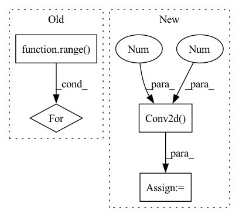

Pattern ID :245
Before Change
in_channels = 3
out_channels = 64
for _ in range( num_conv_block):
block += [nn.ReflectionPad2d(1),
nn.Conv2d(in_channels, out_channels, 3),
nn.LeakyReLU(),
nn.BatchNorm2d(out_channels)]After Change
def __init__(self):
super(Discriminator, self).__init__()
self.features = nn.Sequential(
// Conv0
nn.Conv2d(3, 64, kernel_size=3, stride=1, padding=1, bias=False),
nn.LeakyReLU(negative_slope=0.2, inplace=True),
nn.Conv2d(64, 64, kernel_size=4, stride=2, padding=1, bias=False),
nn.BatchNorm2d(64),
nn.LeakyReLU(negative_slope=0.2, inplace=True),
// Conv1
nn.Conv2d(64, 128, kernel_size=3, stride=1, padding=1, bias=False),
nn.BatchNorm2d(128),
nn.LeakyReLU(negative_slope=0.2, inplace=True),
nn.Conv2d(128, 128, kernel_size=4, stride=2, padding=1, bias=False),
nn.BatchNorm2d(128),
nn.LeakyReLU(negative_slope=0.2, inplace=True),
// Conv2
nn.Conv2d(128, 256, kernel_size=3, stride=1, padding=1, bias=False),
nn.BatchNorm2d(256),
nn.LeakyReLU(negative_slope=0.2, inplace=True),
nn.Conv2d(256 , 256 , kernel_size=4, stride=2, padding=1, bias=False) ,
nn.BatchNorm2d(256),
nn.LeakyReLU(negative_slope=0.2, inplace=True),
In pattern: SUPERPATTERN
Frequency: 5
Non-data size: 4
Instances Fragment ID: 1920797
Project Name: lornatang/esrgan-pytorch
Commit Name: 8ef58f0f8458d618a99fffa07433927c9b9ef70f
Time: 2020-10-12
Author: liuchangyu1111@gmail.com
File Name: esrgan_pytorch/model.py
M Class Name: Discriminator
N Class Name: Discriminator
M Method Name: __init__(1)
N Method Name: __init__(2)
M Parent Class: nn.Module
N Parent Class: nn.Module
M File Name: esrgan_pytorch/model.py
N File Name: esrgan_pytorch/model.py
M Start Line: 140
M End Line: 177
N Start Line: 26
N End Line: 74
Before Change
self.conv1 = nn.Conv2d(3, 64, kernel_size=9, stride=1, padding=4)
for i in range( self.n_residual_blocks):
self.add_module("residual_block_" + str(i + 1), ResidualBlock())
self.conv2 = nn.Conv2d(64, 64, kernel_size=3, stride=1, padding=1)
self.bn = nn.BatchNorm2d(64)After Change
// Upsampling layers
upsampling = []
for out_features in range(upsample_block_num):
upsampling += [
nn.Conv2d(64 , 256, 3, 1, 1 ) ,
nn.BatchNorm2d(256),
nn.PixelShuffle(upscale_factor=2),
nn.PReLU(), Fragment ID: 1920793
Project Name: lornatang/srgan-pytorch
Commit Name: acd467b89c7ccd5ca556b43a505b5745feda6b21
Time: 2020-09-21
Author: liuchangyu1111@gmail.com
File Name: srgan_pytorch/model.py
M Class Name: Generator
N Class Name: Generator
M Method Name: __init__(2)
N Method Name: __init__(3)
M Parent Class: nn.Module
N Parent Class: nn.Module
M File Name: srgan_pytorch/model.py
N File Name: srgan_pytorch/model.py
M Start Line: 78
M End Line: 100
N Start Line: 24
N End Line: 60
Before Change
// Upscale block
upsampling = []
for _ in range( 2):
upsampling.append(UpsampleBlock(64))
self.upsampling = nn.Sequential(*upsampling)
// Output layer.After Change
)
// Output layer.
self.conv4 = nn.Conv2d(64 , 3 , (3, 3), (1, 1), (1, 1))
// The model should be defined in the Torch.script method.
def _forward_impl(self, x: torch.Tensor) -> torch.Tensor:
out1 = self.conv1(x) Fragment ID: 1920761
Project Name: lornatang/esrgan-pytorch
Commit Name: 46b948d8f86c7b83fe328e4572704b1755f98e68
Time: 2022-04-18
Author: liuchangyu1111@gmail.com
File Name: model.py
M Class Name: Generator
N Class Name: Generator
M Method Name: __init__(1)
N Method Name: __init__(1)
M Parent Class: nn.Module
N Parent Class: nn.Module
M File Name: model.py
N File Name: model.py
M Start Line: 120
M End Line: 147
N Start Line: 147
N End Line: 171
Before Change
stem_layers = []
in_c, out_c = 3, embed_dim // 8
for _ in range( 4):
// original code uses bias=False even though there is no norm layer
stem_layers.append(nn.Conv2d(in_c, out_c, 3, stride=2, padding=1))
stem_layers.append(nn.GELU())
in_c, out_c = out_c, out_c * 2
self.stem = nn.Sequential(*stem_layers)After Change
super().__init__()
self.norm_type = norm_type
self.out_channels = (embed_dim,)
self.stem = nn.Sequential(
nn.Conv2d(3 , embed_dim // 8, 3 , stride=2, padding=1) ,
nn.GELU(),
nn.Conv2d(embed_dim//8, embed_dim // 4, 3, stride=2, padding=1),
nn.GELU(), Fragment ID: 1920805
Project Name: gau-nernst/vision-toolbox
Commit Name: 9c33936b15da329b7d51d981196aca20d5e00077
Time: 2022-03-04
Author: gau.nernst@yahoo.com.sg
File Name: vision_toolbox/backbones/patchconvnet.py
M Class Name: PatchConvNet
N Class Name: PatchConvNet
M Method Name: __init__(7)
N Method Name: __init__(5)
M Parent Class: BaseBackbone
N Parent Class: BaseBackbone
M File Name: vision_toolbox/backbones/patchconvnet.py
N File Name: vision_toolbox/backbones/patchconvnet.py
M Start Line: 140
M End Line: 150
N Start Line: 155
N End Line: 172
Before Change
basic_block_layer = []
for _ in range( n_basic_block):
basic_block_layer += [ResidualInResidualDenseBlock(num_init_features, growth_rate)]
self.basic_block = nn.Sequential(*basic_block_layer)
After Change
self.conv2 = nn.Conv2d(64, 64, kernel_size=3, stride=1, padding=1, bias=False)
// Upsampling layers
self.upsampling = nn.Conv2d(64 , 64 , kernel_size=3, stride=1, padding=1, bias=False)
// Final output layer
self.conv3 = nn.Sequential(
nn.Conv2d(64, 64, kernel_size=3, stride=1, padding=1, bias=False), Fragment ID: 1920769
Project Name: lornatang/esrgan-pytorch
Commit Name: 8ef58f0f8458d618a99fffa07433927c9b9ef70f
Time: 2020-10-12
Author: liuchangyu1111@gmail.com
File Name: esrgan_pytorch/model.py
M Class Name: Generator
N Class Name: Generator
M Method Name: __init__(2)
N Method Name: __init__(7)
M Parent Class: nn.Module
N Parent Class: nn.Module
M File Name: esrgan_pytorch/model.py
N File Name: esrgan_pytorch/model.py
M Start Line: 99
M End Line: 125
N Start Line: 181
N End Line: 210